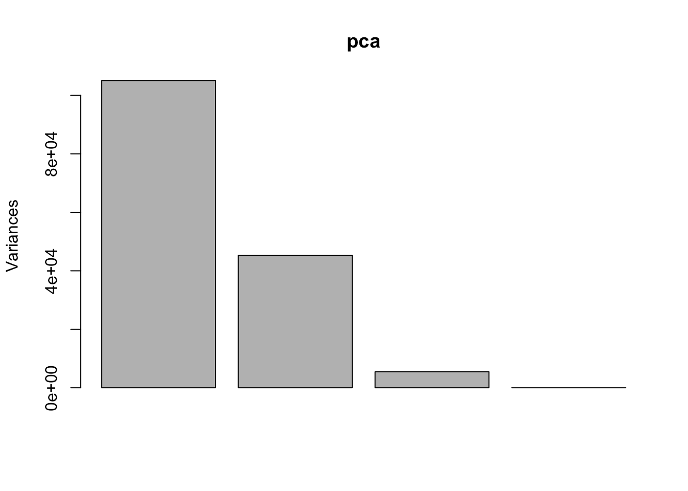

hist(rnorm(10000), )class 07 - machine learning 1
In this class, we will explore different clustering methods and end with PCA!
k-means clustering
First we will make up some fake data to cluster a known set of values
I want a vector with numbers from two distributions concatenated into one
tmp <- c(
rnorm(30, -3),
rnorm(30, +3)
)
hist(tmp)x <- data.frame(x = tmp, y = rev(tmp))Let’s plot our points using ggplot2!
library(ggplot2)
ggplot(x) +
aes(x=x, y=y) +
geom_point()First use of k-means
km <- kmeans(x, 2)
kmK-means clustering with 2 clusters of sizes 30, 30
Cluster means:
x y
1 3.152973 -2.856391
2 -2.856391 3.152973
Clustering vector:
[1] 2 2 2 2 2 2 2 2 2 2 2 2 2 2 2 2 2 2 2 2 2 2 2 2 2 2 2 2 2 2 1 1 1 1 1 1 1 1
[39] 1 1 1 1 1 1 1 1 1 1 1 1 1 1 1 1 1 1 1 1 1 1
Within cluster sum of squares by cluster:
[1] 43.68996 43.68996
(between_SS / total_SS = 92.5 %)
Available components:
[1] "cluster" "centers" "totss" "withinss" "tot.withinss"
[6] "betweenss" "size" "iter" "ifault" It’s important to be able to get back our computation in a way that is intuitive
Q. How about cluster centers?
Q. How about the main result - the cluster assignment vectors?
Q. Can we make a summary figure displaying the results? - The points colored by cluster assignment and maybe add the cluster centers as a different color?
p <- ggplot(x) +
aes(x=x, y=y, color=factor(km$cluster)) +
geom_point()ggplot(NULL) +
aes(x, y, color=factor(km$cluster)) +
geom_point(data=data.frame(km$centers), color=factor(c(2,1)), size=10) +
geom_point(data=x)Above is a plot with us only asking kmeans for 2 clusters. Let’s try to visualize how it performs when we ask it to perform clustering with a range of clusters
totss <- NULL
for(k in 1:7) {
curr_k <- kmeans(x, k)
totss[k] <- curr_k$withinss
}Warning in totss[k] <- curr_k$withinss: number of items to replace is not a
multiple of replacement length
Warning in totss[k] <- curr_k$withinss: number of items to replace is not a
multiple of replacement length
Warning in totss[k] <- curr_k$withinss: number of items to replace is not a
multiple of replacement length
Warning in totss[k] <- curr_k$withinss: number of items to replace is not a
multiple of replacement length
Warning in totss[k] <- curr_k$withinss: number of items to replace is not a
multiple of replacement length
Warning in totss[k] <- curr_k$withinss: number of items to replace is not a
multiple of replacement lengthplot(totss, type='b', col='blue', lwd=3)hierarchical clustering
We can’t just give the hclust() function of input data x like we did for kmeans().
We need to first calculate a “distance (dissimilarity) matrix”. The dist() function by default will calculate using Euclidean distance.
d <- dist(x)
hc <- hclust(d)
hc
Call:
hclust(d = d)
Cluster method : complete
Distance : euclidean
Number of objects: 60 The printout of hclust() isn’t very useful, but the plot method is useful.
plot(hc)
abline(h=10, lty=2, col="red", lwd=3)To get my all-important cluster membership vector out of an hclust object, I can use the cutree() function.
hc_groups <- cutree(hc, h=10)You can also cut the tree so it yields 3 groups.
hc_groups <- cutree(hc, k=2)Let’s make another figure
ggplot(x) +
aes(x=x, y=y, color=factor(hc_groups)) +
geom_point()pca
The main base R function to do PCR is called prcomp()
First, I need to import the data!
url <- "https://tinyurl.com/UK-foods"
foods <- read.csv(url, row.names=1)
head(foods) England Wales Scotland N.Ireland
Cheese 105 103 103 66
Carcass_meat 245 227 242 267
Other_meat 685 803 750 586
Fish 147 160 122 93
Fats_and_oils 193 235 184 209
Sugars 156 175 147 139Let’s explore the data graphically
barplot(as.matrix(x), beside=T, col=rainbow(nrow(x)))barplot(as.matrix(x), beside=F, col=rainbow(nrow(x)))Let’s try doing pairwise scatter plots of data for each country
pairs(foods, col=rainbow(10), pch=16)
How about we try PCA?
pca <- prcomp( t(foods) )
summary(pca)Importance of components:
PC1 PC2 PC3 PC4
Standard deviation 324.1502 212.7478 73.87622 4.189e-14
Proportion of Variance 0.6744 0.2905 0.03503 0.000e+00
Cumulative Proportion 0.6744 0.9650 1.00000 1.000e+00plot(pca)
pca$x PC1 PC2 PC3 PC4
England -144.99315 2.532999 -105.768945 2.842865e-14
Wales -240.52915 224.646925 56.475555 7.804382e-13
Scotland -91.86934 -286.081786 44.415495 -9.614462e-13
N.Ireland 477.39164 58.901862 4.877895 1.448078e-13Let’s make a “score” or “ordination” plot
my_colors = c("orange", "red", "blue", "darkgreen")
plot(pca$x[,1], pca$x[,2], col=my_colors, pch=16)
# text(pca$x[,1], pca$x[,2], colnames(foods), col=my_colors)
abline(h=0, col="gray", lty=2)
abline(v=0, col="gray", lty=2)
pca_df <- as.data.frame(pca$x)
ggplot(pca_df) +
aes(PC1, PC2) +
geom_point()How can we check to see the contribution of the original variables to the PCs?
loadings <- as.data.frame(pca$rotation)
ggplot(loadings) +
aes(PC1, rownames(loadings)) +
geom_col() +
labs(title='Loadings for PC1')
loadings <- as.data.frame(pca$rotation)
ggplot(loadings) +
aes(PC2, rownames(loadings)) +
geom_col() +
labs(title="Loadings for PC2")